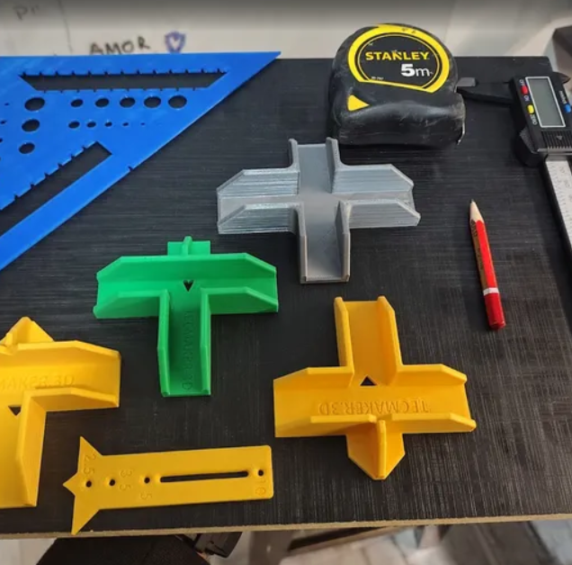
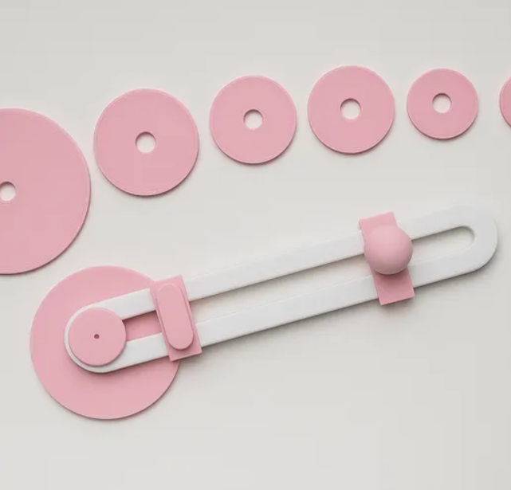
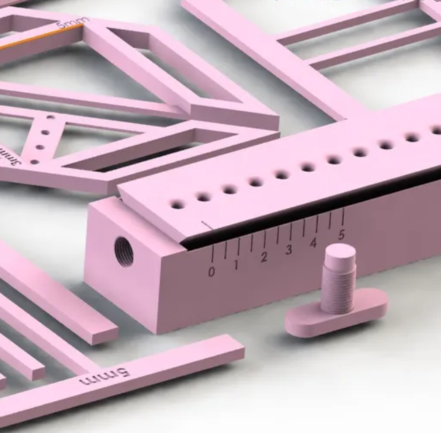
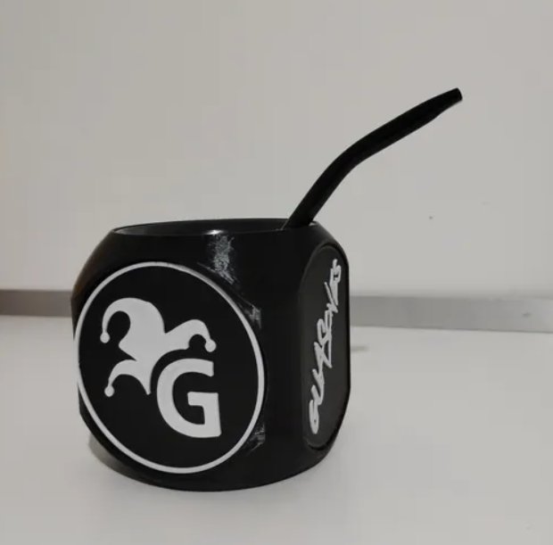
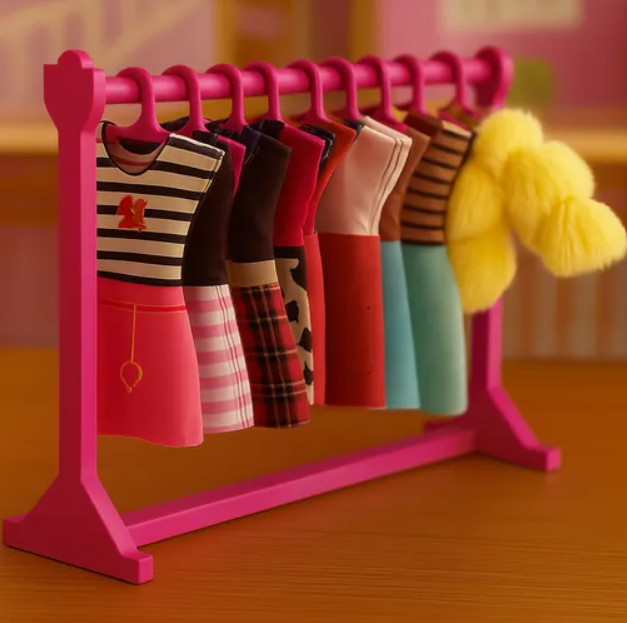
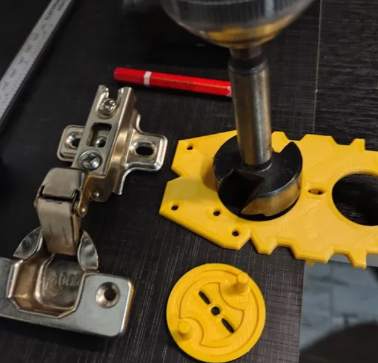
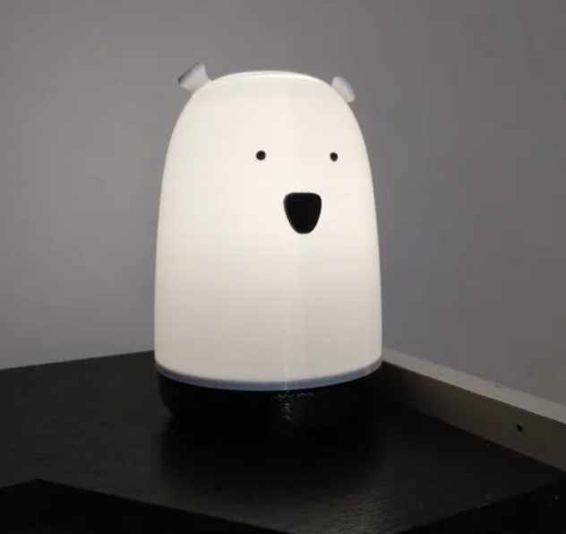

Caliz para comunión
Copa para souvenir comunión. Disponible en Cults3D para descargar e imprimir.
Ver en Cults3DCopa para souvenir comunión. Disponible en Cults3D para descargar e imprimir.
Ver en Cults3D
Este kit completo de carpintería en 3D es ideal para armar muebles de 15 mm y 18 mm con máxima precisión y rapidez.
Ver en Cults3D
Cortante circular de diseño propio, ideal para cortar materiales como papel, goma eva, vinilo, fieltro y más. Diseño robusto, fácil de imprimir y ensamblar. Incluye discos intercambiables para cortar círculos de distintos diámetros (25 a 70 mm).
Ver en Cults3D
¿Hacés cuadernos, libretas o tapas duras? Este es el kit de encuadernación impreso en 3D más completo de su categoría. Diseñado para FDM, sin soportes, con medidas grabadas y lógica modular para trabajar rápido, preciso y repetible.
Ver en Cults3D
Mate de la famosa banda "Guasones" Para interior de Nost3rd o para editar a gusto
Ver en Cults3D
Tu solución definitiva para exhibir y organizar vestuario de muñecas con estilo y precisión. Diseñado para imprimir sin soportes en una cama de 220 por 220 mm
Ver en Cults3D
Esta plantilla es una herramienta práctica y precisa para la instalación de bisagras tipo cazoleta, en sus medidas más comunes: 35mm y 26mm..
Ver en Cults3D
Para decorar e iluminar tus ambientes. Nada mejor que un lindo y tierno osito para ambientar el lugar que más te guste.
Ver en Cults3D